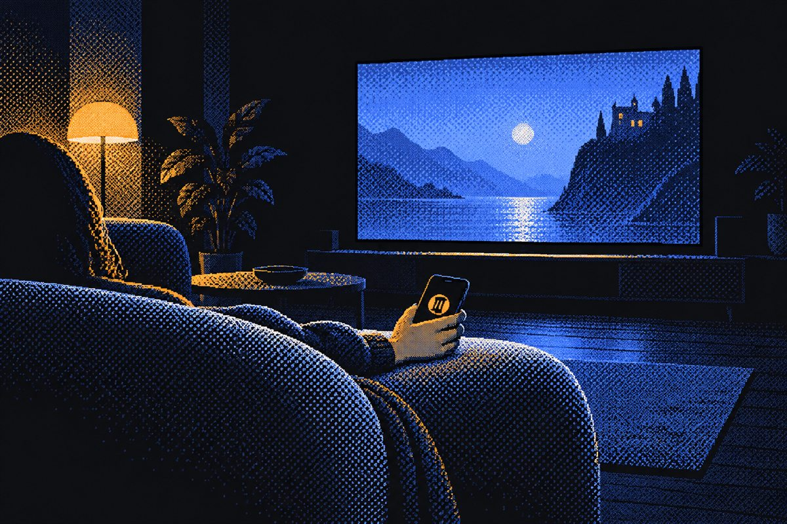
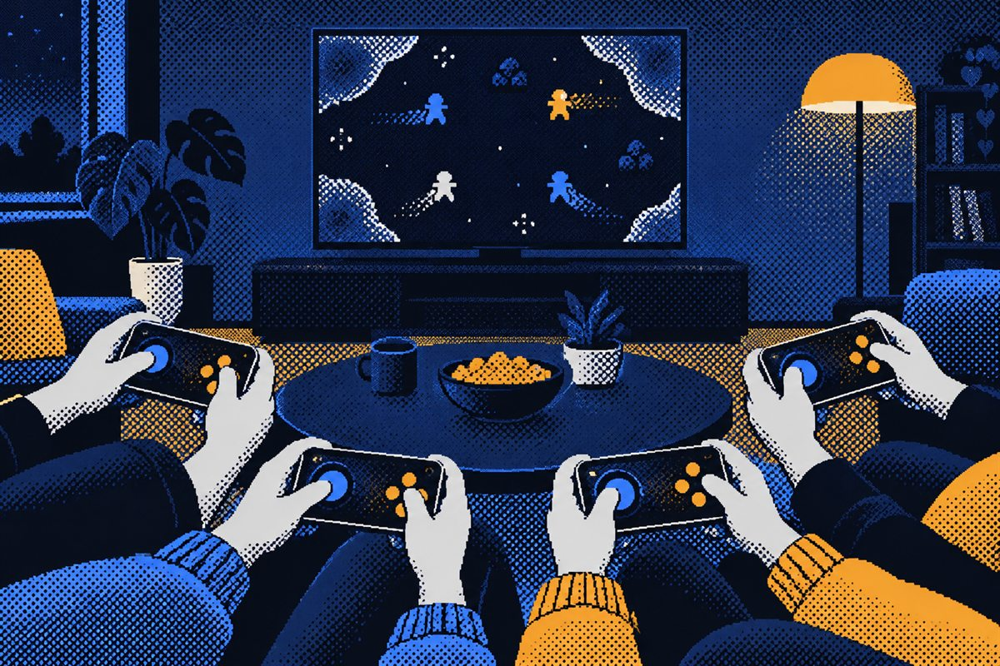
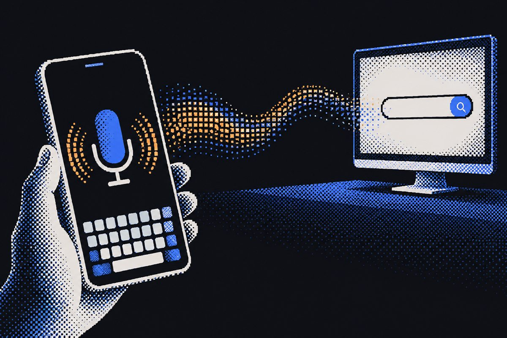
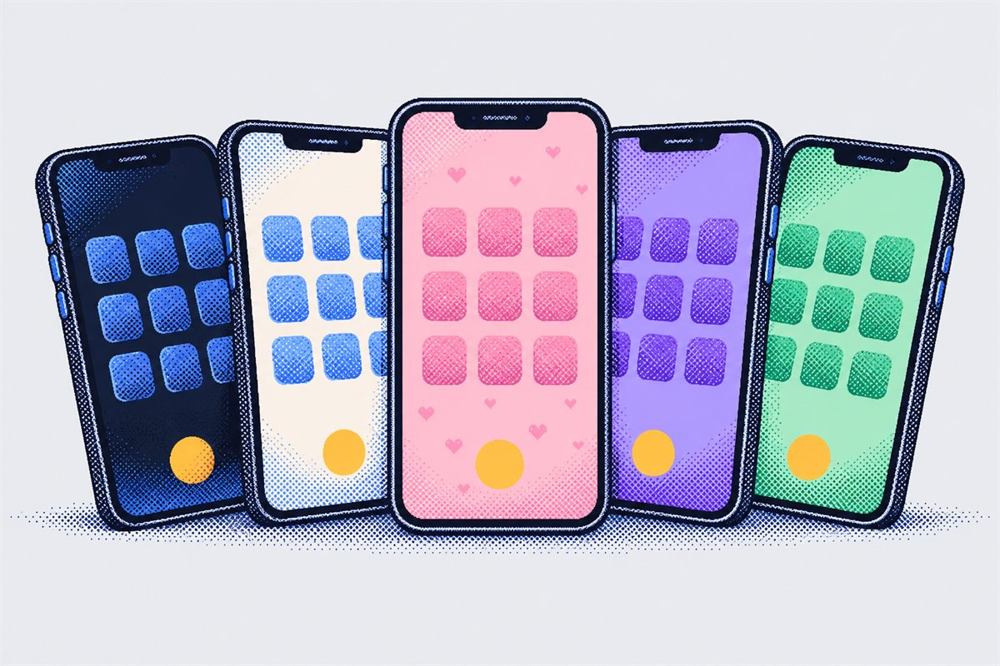
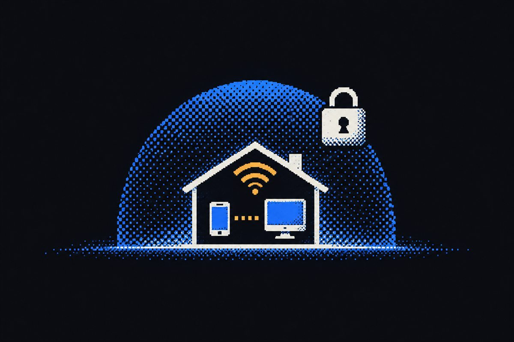

Your phone becomes the remote, the touchpad, the keyboard and a real game controller. Run one file on the PC, scan the QR code, done.
Everyone already holds the fix: their phone.
One small program on the PC, with the phone app built in. Nothing to sign up for, and nothing leaves your Wi-Fi.
Start sofa-remote. It's a single file: no installer, no account, no setup screens.
Point the phone camera at the code it shows. The link carries its own access key, so only your phones get in.
Play, pause, scroll, type, game. Add more PCs and switch between them from the top bar.

Play, pause, skip, seek and volume from any app: browsers, players, streaming sites. Big buttons you can hit in the dark.

Each phone shows up on the PC as its own Xbox controller, so games, Steam and emulators just see gamepads. Grab a phone each and pick your players.

Type on your phone's own keyboard and it lands in whatever is focused on the PC. Or tap the mic and just say it.

Every screen is a layout you can change right on the phone. Move and resize anything, and give a button any key, shortcut, mouse action or macro.

Your phone talks straight to your PC over your own network. No account to make, no server in between, nothing collected.
Add each PC once, switch from the top bar. One button can even hit them all.
Every phone keeps its own theme, and all of them can be connected at once.
Play, next and previous on the lock screen and in the notification. Exit from there too.
Chain keys, text and waits into one button: open an app, log in to a game, start a playlist.
Gamepad layouts go edge to edge, so your thumbs only find buttons.
The phone app is a web page served by the PC. The Android app is optional.
Written in Rust, with a tiny binary protocol, so a key press is a few bytes and never waits behind the one before.
No. The PC serves the remote as a web page: scan the QR code and it opens in the phone's browser, iPhone or Android. The optional Android app adds the volume buttons, lock-screen controls and voice typing everywhere.
Only phones with the PC's access key can connect, and the key is in the QR code it shows you. Nothing goes through the internet and nothing is collected. You can make a new key any time with --new-key, which locks out every phone that had the old one.
Anything that supports an Xbox controller: Steam, most PC games and emulators. Each phone is its own controller, so local multiplayer games see separate players.
Windows needs a driver for virtual controllers. Sofa Remote uses ViGEmBus, the open-source driver many controller tools use, and ships its official installer inside the download. The first time you use a gamepad, Windows asks once for permission. It's also on every release page as its own file.
Yes, except the gamepads: macOS has no way to add a virtual controller, so the keyboard-and-mouse game layout is there instead.
Nothing. It's open source: free to use, read and change.
One file per platform. Run it, scan the code, done.
On Linux and macOS, make it executable first: chmod +x sofa-remote-*. Every build, the gamepad driver installer and the release notes are on the releases page.
Free, open source, and running in under a minute.